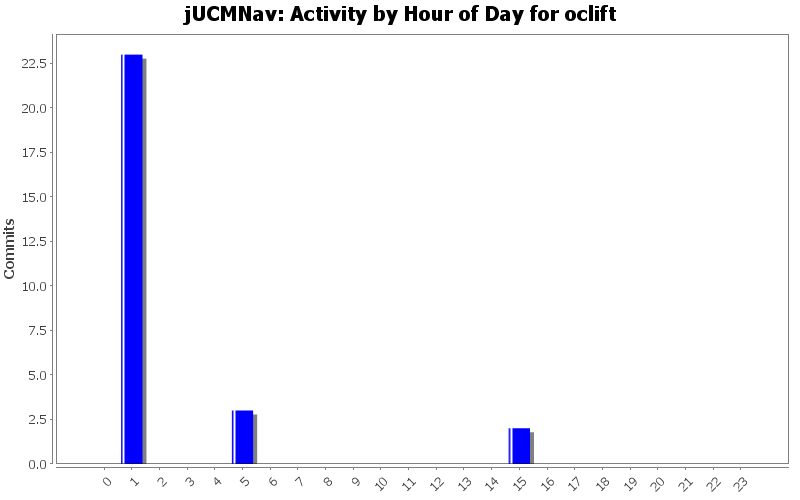
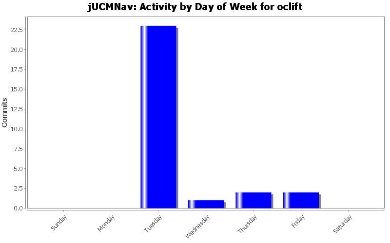
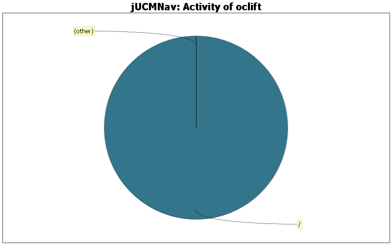

| Directory | Changes | Lines of Code | Lines per Change |
|---|---|---|---|
| Totals | 28 (100.0%) | 44 (100.0%) | 1.5 |
| / | 2 (7.1%) | 44 (100.0%) | 22.0 |
| src/seg/jUCMNav/views/wizards/ | 2 (7.1%) | 0 (0.0%) | 0.0 |
| src/seg/jUCMNav/icons/ | 22 (78.6%) | 0 (0.0%) | 0.0 |
| src/seg/jUCMNav/editors/palette/ | 1 (3.6%) | 0 (0.0%) | 0.0 |
| src/seg/jUCMNav/editors/ | 1 (3.6%) | 0 (0.0%) | 0.0 |

Encoding error on previous commit
0 lines of code changed in 1 file:
New StatCalc under right license
0 lines of code changed in 1 file:
Clicking on a Responsibility in the Outline caused a AssertionFail
0 lines of code changed in 1 file:
24x24 Icons
0 lines of code changed in 23 files:
Framework for the help added.
44 lines of code changed in 2 files: